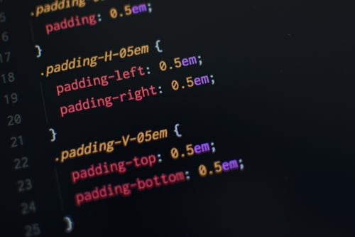

Cascading Style Sheets CThis document collects together into one definition all the specs that together form the current state of Cascading Style Sheets (CSS) as of 2018. The primary audience is CSS implementers, not CSS authors, as this definition includes modules by specification stability, not Web browser adoption rate. CSS is a language for describing the rendering of structured documents (such as HTML and XML) on screen, on paper, etc.
When the first CSS specification was published, all of CSS was contained in one document that defined CSS Level 1. CSS Level 2 was defined also by a single, multi-chapter document. However for CSS beyond Level 2, the CSS Working Group chose to adopt a modular approach, where each module defines a part of CSS, rather than to define a single monolithic specification. This breaks the specification into more manageable chunks and allows more immediate, incremental improvement to CSS. Since different CSS modules are at different levels of stability, the CSS Working Group has chosen to publish this profile to define the current scope and state of Cascading Style Sheets as of mid 2018. This profile includes only specifications that we consider stable and for which we have enough implementation experience that we are sure of that stability.